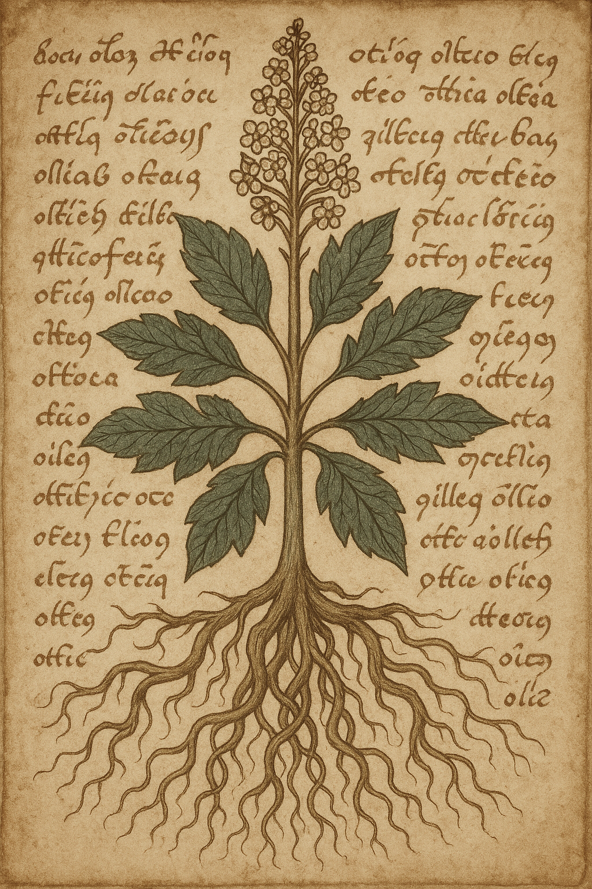
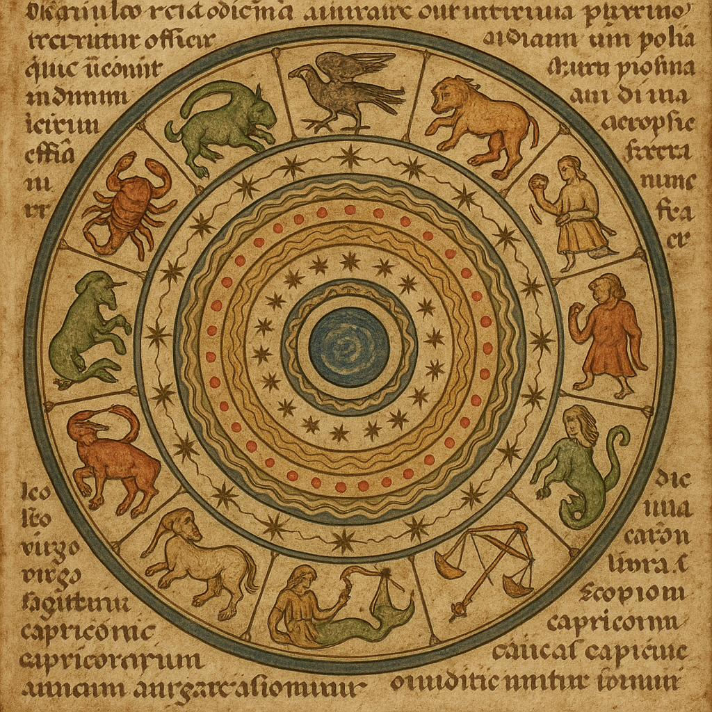
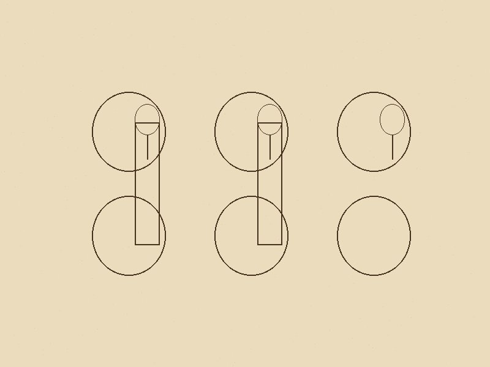
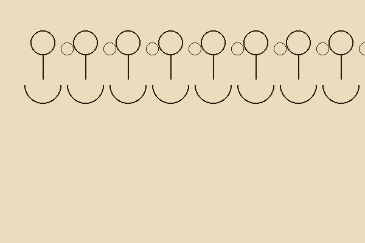
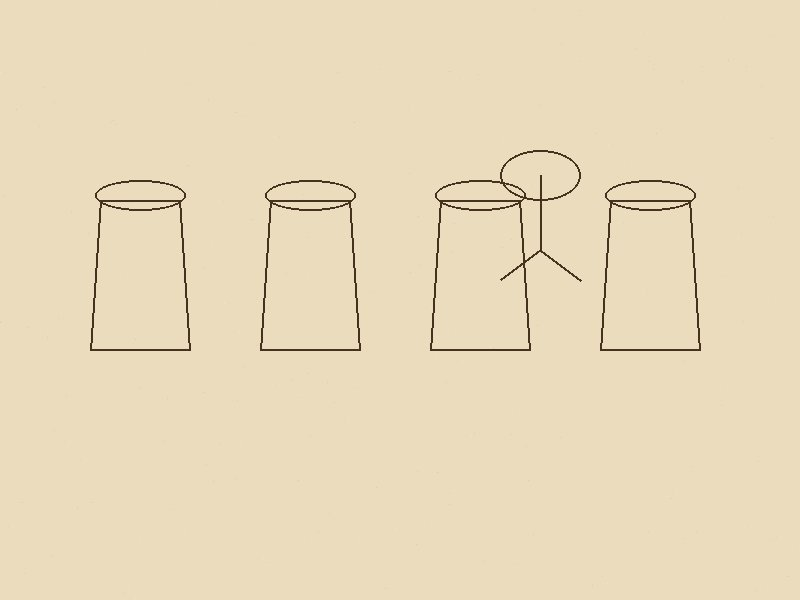
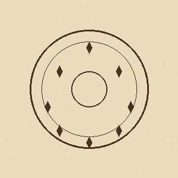
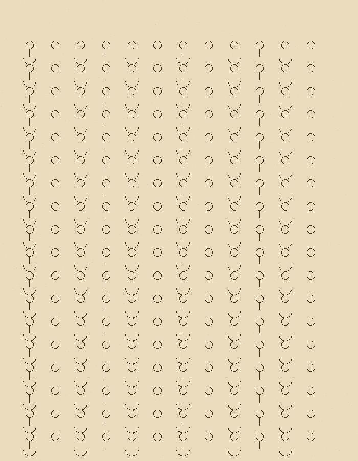

Generated by moonshot/kimi-k2.5 · April 2, 2026
In 1912, a Polish book dealer named Wilfrid Voynich walked into the Jesuit College at Frascati, near Rome, and found a book that would consume the rest of his life — and the lives of cryptographers, linguists, and codebreakers for the next century.
It is a 240-page codex written entirely in an unknown script, illustrated with surreal drawings of plants that don't exist, astronomical charts featuring nude women tethered to stars, and diagrams of women bathing in interconnected tubes that look like nothing in the natural world. Every serious attempt to read it has failed. The greatest codebreakers of two World Wars tried and gave up. Modern AI has thrown machine learning at it and produced educated guesses, not answers.
The Voynich manuscript remains, six centuries after it was written, the most famous unread book in the world.
The manuscript measures roughly 23.5 × 16.2 cm — about the size of a modern paperback. Its pages are made of calfskin vellum, and it contains approximately 38,000 words of text written from left to right in an alphabet of 20–25 characters. The words average 4–5 characters long and follow consistent phonological patterns: certain letters appear only at the beginning of words, others only at the end. The text flows smoothly, as if written by someone fluent in the script, without the hesitations you'd expect from encoding a hidden message.
The book is conventionally divided into six sections based on their illustrations:

Botanical section — an unidentified plant. None of the manuscript's plants match known species with certainty.
(Source: Beinecke Rare Book & Manuscript Library, Yale University)

Astronomical section — circular diagrams suggestive of celestial observations.
(Source: Beinecke Rare Book & Manuscript Library, Yale University)

Balneological section — nude figures connected by tubes. The purpose of these drawings is entirely unknown.
(Source: Beinecke Rare Book & Manuscript Library, Yale University)
In 2009, the University of Arizona performed radiocarbon dating on four samples taken from different sections of the manuscript. The results were unambiguous: the vellum dates to 1404–1438 with 95% probability. That means the parchment itself was prepared in the early 15th century — though the ink and writing could theoretically have been added later.
The analysis sampled four different folios: one from the Herbal A section (fol. 8), one from Herbal B (fol. 26), one from a notably thick folio (fol. 47), and one from an astronomical foldout (fol. 68). All four samples clustered tightly around the same date range, suggesting the manuscript was produced in a single campaign rather than assembled over centuries from disparate materials.
Chemical analysis of the inks revealed iron gall ink — standard for the period — and pigments of azurite (blue), calcium carbonate (white), copper-chlorine compounds (green), and red ochre (red-brown). All inexpensive, everyday materials.

The unknown script flows without hesitation — suggesting a native writer, not someone encoding a cipher on the fly.
(Source: Beinecke Rare Book & Manuscript Library, Yale University)
The manuscript's ownership history reads like a parade through the strangest minds of European history:
John Dee (1527–1608) — The great English mathematician, astrologer, and advisor to Queen Elizabeth I may have owned the manuscript and brought it to Prague. His son later noted that Dee "bestowed much time" on a book of hieroglyphics but could not decipher it.

Pharmaceutical section — plant parts alongside vessels, suggesting a medical or alchemical manual.
(Source: Beinecke Rare Book & Manuscript Library, Yale University)
The Voynich manuscript has been studied by some of the most formidable codebreakers of the 20th century. All of them failed.

Astronomical symbols and zodiac details typical of the manuscript's celestial sections.
(Source: Beinecke Rare Book & Manuscript Library, Yale University)
Over a century of study has produced an exhaustive list of hypotheses. Most fall into one of these categories:
The simplest explanation: the text is an encrypted European language. But ciphers from the 15th century are well understood, and the Voynich text's statistical properties — particularly its extremely low entropy — don't match any known encryption method. A simple substitution cipher would produce text that looks like scrambled European language; the Voynich looks like nothing at all.
Someone invented a language — its alphabet, grammar, and vocabulary — and wrote an actual book in it. The consistent statistical properties and word structures support this. But who would do such a thing, and why? No comparable artificial language from the period is known.
Perhaps the manuscript records a genuine spoken language that was never widely written down — a dialect, a trade language, or even a lost language. But no known language produces anything resembling Voynichese when its sounds are mapped to any plausible alphabet.
The manuscript is an elaborate, purposeless forgery — created to fool Emperor Rudolf II into paying 600 gold ducats for a curiosity. The 2009 carbon dating makes a 1912 forgery impossible, but a 15th-century hoax is still theoretically possible. The problem: maintaining a consistent, rule-following invented language across 38,000 words and 240 pages — with Zipf's law and grammatical structure intact — would require enormous effort and sophistication. A hoaxer of that caliber would almost certainly leave detectable traces.
The product of someone writing in a trance state or altered consciousness, producing text that feels meaningful to the author but carries no actual semantic content. Some scholars have noted parallels between the Voynich text and speech glossolalia. But the presence of systematic structure — two distinct "languages," consistent grammar, and clear section divisions — makes spontaneous creation unlikely.
Not a book to be read, but an index or catalog of knowledge — perhaps of plants, medicines, or astronomical data — organized in a format that relies on visual context rather than prose. The botanical illustrations and pharmaceutical images support this, but it doesn't explain the apparent sentences and paragraphs.
What makes the Voynich manuscript so haunting is not that it's unread — we have unread texts from antiquity all the time. It's that the text looks like it should be readable. The handwriting is confident and fluent. The illustrations are detailed and purposeful. The statistical structure is indistinguishable from natural language in many respects.

The manuscript contains roughly 38,000 words — and not one has been definitively translated.
(Source: Beinecke Rare Book & Manuscript Library, Yale University)
Yale published the complete manuscript online in 2020. Every page is available at high resolution:
Images: All manuscript page images sourced from the Beinecke Rare Book & Manuscript Library, Yale University, via Wikimedia Commons.